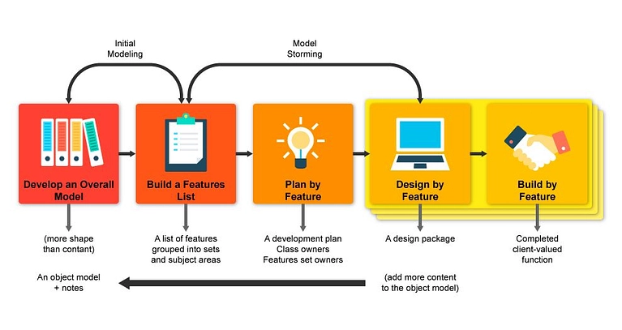

What is it?
Feature-Driven Development (FDD) is a model within Agile development focused on delivering high-quality, client-valued features in a structured and methodical way. As Agile methodologies have become popular for their flexibility and focus on collaboration, FDD stands out due to its precise focus on features that directly meet client needs. This makes FDD particularly useful for projects with clear requirements and a desire for rapid delivery of working software.
Where is it used?
Pros and Cons
| Pros | Cons |
|---|---|
| Emphasizes the design and building of features, ensuring that progress is tangible and transparent. | Requires significant design and planning upfront, which may not suit projects with high uncertainty or volatility. |
| Allows for clear visibility into the progress and results of development efforts. | Less flexibility to accommodate changes compared to other Agile methodologies. |